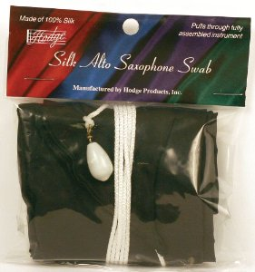
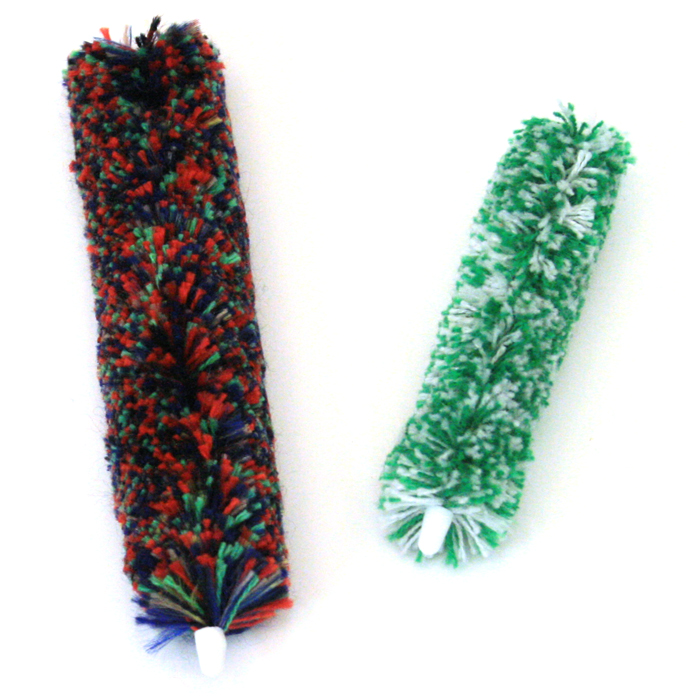

First Lesson
For our first lesson, make sure to bring any music you are working on or have worked on. We will spend some time getting to know each other and talk about your musical goals. If its your first time playing the sax, you can wait until the lesson to put your sax together with my help or you can check out the videos on this page.
Teaching Philosophy
Basic theory and the ability to read music are essential to starting your journey with the saxophone. A good amount of time will also be spent learning music by ear. Music is mostly an aural activity, so training your ear is also important. The unique, melodic sound of the saxophone allows it to intregrate wonderfully with many styles of music. The most popular genres for sax are jazz, pop, and classical, but you can play anything that catches your ear. If you enjoy the music from a particular movie or a favorite video game, playing it on saxophone can be incredibly fun and rewarding. Gaining a deeper appreciation for music through the saxophone, or any other instrument, will benefit you for the rest of your life.
Alex Baker
Alex is a graduate of the Lamont School of Music at the University of Denver, where he earned a Bachelors of Music Performance degree. He has spent time traveling the US and abroad, contributing his musical expertise to numerous projects. Alex has a strong background in performing varied musical styles, including classical, jazz, funk, salsa, ska, rock and pop. With extensive experience playing soprano, alto, tenor, baritone saxophone and doubling on flute and clarinet, Alex has taught many students and groups ranging in age and skill level over the last ten years.
First Time Playing the Sax?
I highly recommend getting everything on this list of materials. At the very least, get the Essential Elements 2000 book and all the cleaning supplies.
| Books | Alto | Tenor | |
|---|---|---|---|
| Essential Elements 2000 Book 1 | |||
| Belwin Master Duets for Saxophone | |||
| Maiden Voyage: Fourteen Easy-To-Play Jazz Tunes | |||
| Cleaning | |||
|  | Silk Body Swab | ||
|  | Mouthpiece Swab | ||
| Reeds | |||
| Vandoran Regular | |||
| Apps | Android | iPhone | |
| Tuner | |||
| Metronome | |||
Check out the videos below to get started playing your first notes. Its important to clean your sax when finished so make sure to watch both.